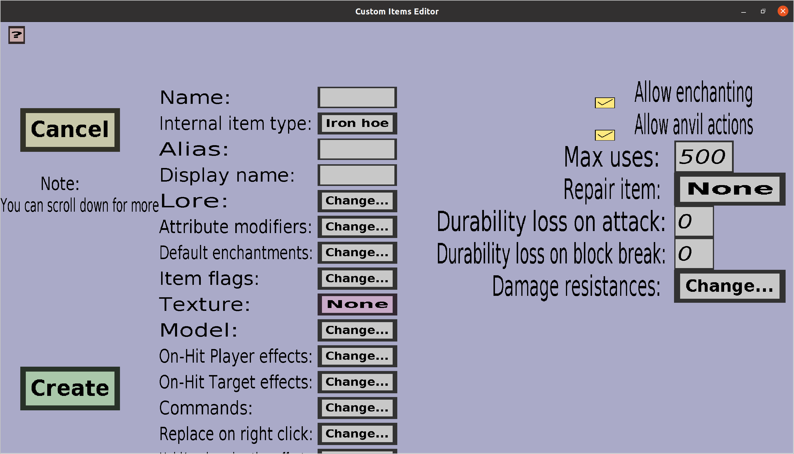

The 3d helmet edit menu can be used to create or modify 3d helmet custom items. These are like regular custom helmets, but they can show a custom 3d model when worn. This is unfortunately the only armor piece that can have such a custom model (without Optifine). If you just started creating a new one, it should look like this:
3d helmets don't have any properties regular armor pieces don't have, so you can find information about all these properties in the armor edit menu. But, there are a couple of differences:
As promised, below is an example of a custom model:
{ "parent": "block/orientable", "textures": { "top": "blocks/furnace_top", "front": "customitems/NAME_OF_ONE_OF_YOUR_TEXTURES", "side": "blocks/furnace_side" } }
Make sure you replace the NAME_OF_ONE_OF_YOUR_TEXTURES with the name of one of your textures (doesn't have to be 'the texture' of the helmet you're editing.) This is a silly example model that will make the helmet a furnace, but with a different front texture.
This model is obviously not great, but a nice example. You should use a custom elements section in the model to create a nicer model.